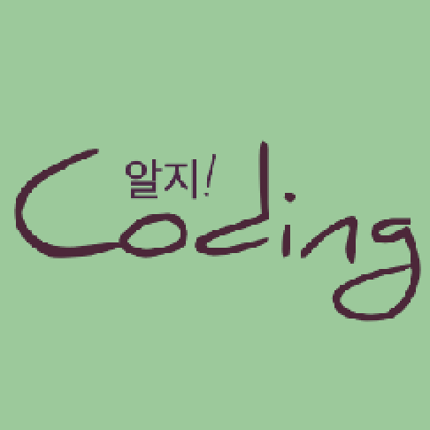
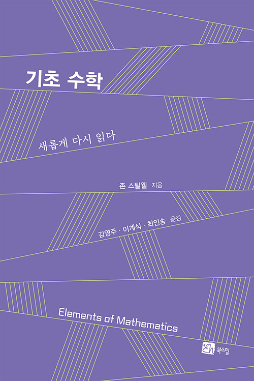
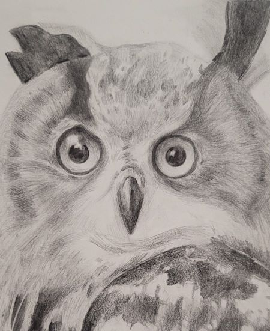

|
|
이계식 교수 (Gyesik Lee, Professor) |
|
컴퓨터응용수학부 소프트웨어융합 전공
한경국립대학교 (경기도 안성시 중앙로 327) Email: gslee @ hknu.ac.kr |
 |  |  |
참고 논문: Algae Development in Rivers with Artificially Constructed Weirs: The Dominant Influence of Discharge Over Temperature (Journal Of Environmental Management)
참고 논문: Comparison of ammonia volatilization in paddy and field soils fertilized with urea and ammonium sulfate during rice, potato, and Chinese cabbage cultivation (Atmospheric Pollution Research)
참고 논문: Semantics, Specification Logic, and Hoare Logic of Exact Real Computation (Logical Methods in Computer Science)